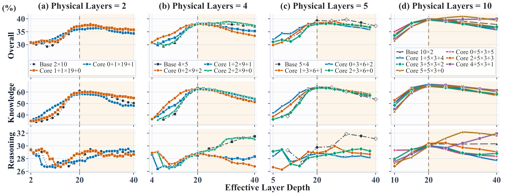
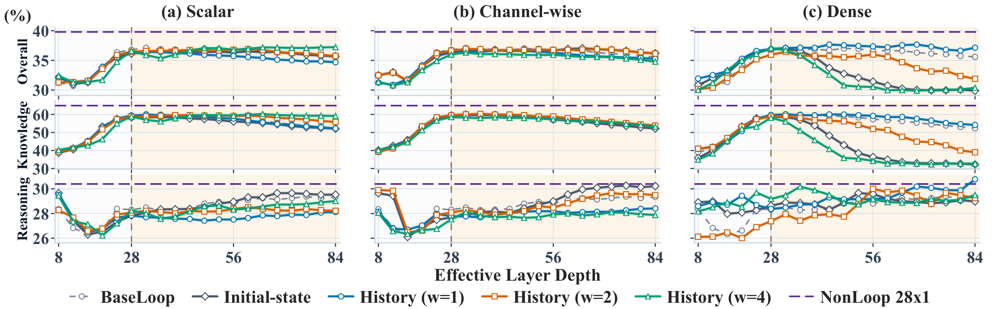
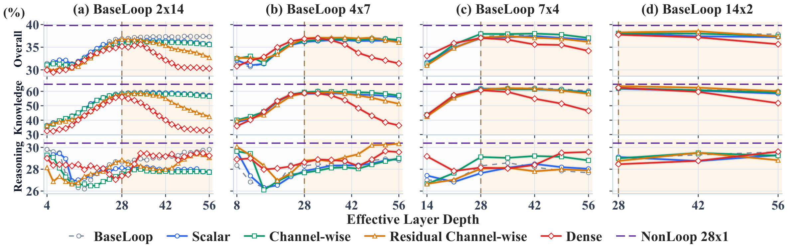
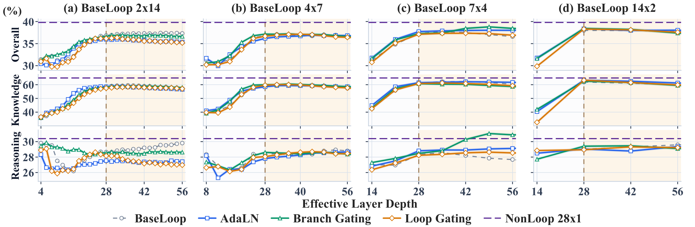
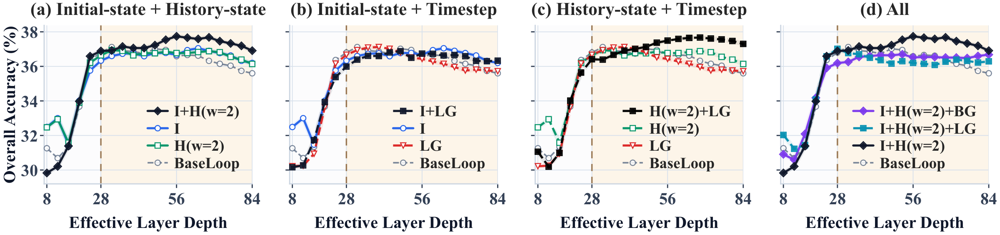
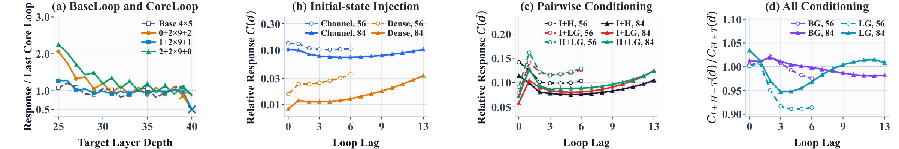

Reasoning can keep improving.
The training horizon is not a hard ceiling. Yet knowledge and reasoning respond differently, and harder reasoning problems do not consistently gain more.
Explore recurrent scaling ↗Understanding when to loop, where to loop,
and how to make every iteration count.
1The Chinese University of Hong Kong2MBZUAI
Abstract
Recurrence can unlock additional reasoning without adding backbone parameters, but effective depth alone does not predict success. History-state injection + timestep conditioning offers a lightweight way to improve robustness across inference budgets.
Looped language models (LoopLMs) increase computational depth through parameter sharing, offering a path to scale inference computation without adding parameters. However, it remains unclear when additional recurrence is beneficial and how architectural choices affect its effectiveness.
Through controlled experiments, we systematically examine when recurrence helps, where it should be applied, and how its conditioning affects performance. Our evaluation covers inference budgets below, within, and beyond the training horizon under knowledge and reasoning tasks.
We find that recurrence can improve reasoning beyond the training horizon while degrading knowledge performance, but harder reasoning instances do not consistently benefit more. Performance also depends on how distinct layers and recurrent iterations are allocated. Non-recurrent output layers improve robustness to under-unrolling, while the preferred placement of input and output layers varies with inference budget.
Finally, conventional initial-state injection offers limited robustness to varying recurrence depth. We propose history-state injection as an alternative, and show that channel-wise history-state injection combined with timestep conditioning better preserves knowledge under extended unrolling while improving robustness across inference budgets.
Key findings
The training horizon is not a hard ceiling. Yet knowledge and reasoning respond differently, and harder reasoning problems do not consistently gain more.
Explore recurrent scaling ↗Equal effective depth does not imply equal behavior. Output-side blocks help at smaller budgets; input-heavy allocations can support reasoning extrapolation.
Explore the architecture ↗Recent state differences and timestep signals provide complementary information, making their combination effective under deep extrapolation.
Explore conditioning ↗Method & setup
A looped decoder applies an input-side Prelude, repeatedly executes a parameter-shared recurrent core, and passes the result through an output-side Coda. Changing the number of loops changes inference compute.
Illustrative BaseLoop setting: p = c = 0, s = 4, training loops K = 7. Prelude and Coda are omitted in this setting. The slider illustrates compute, not predicted accuracy.
Llama3.1-1B and Qwen3-0.6B backbone configurations, randomly initialized and trained on FineWeb-Edu with 2,048-token sequences. Models train with a fixed loop count and full backpropagation through all loops.
Knowledge: SciQ, ARC-Easy, and PIQA. Reasoning: ARC-Challenge, WinoGrande, OpenBookQA, HellaSwag, CommonsenseQA, ProofWriter, CLUTRR, and BBH.
Lphys = p + s + c · L(r) = p + r · s + c
01 / When recurrence helps
For Llama BaseLoop 4 × 5, increasing effective depth from 20 to 40 raises the reasoning score from 28.52 to 31.49, while knowledge falls from 62.80 to 52.11. Additional computation helps selectively.
The allocation of physical depth and loop count also changes the scaling curve. Under the same effective training depth of 20, BaseLoop 5 × 4 reaches a reasoning score of 31.88 at inference depth 30, exceeding the non-recurrent reference of 30.25 using additional test-time computation.
02 / Where to apply recurrence
BaseLoop shares the entire Transformer stack across iterations. CoreLoop reserves independently parameterized Prelude and Coda blocks around the recurrent core. Their preferred allocation changes with the available compute.

Output-side layers help align partially executed recurrent states with the final readout.
Performance is generally strong, with smaller differences between boundary allocations.
Input-heavy allocations can support reasoning, but the benefit depends on the configuration.
03 / How to condition recurrence
Reinjecting the initial state supplies the same reference at every loop. Instead, history-state injection conditions the current update on relative differences from recent completed recurrent states, exposing how the trajectory is evolving.
hℓ+1 = Fθ( hℓ + ∑j=1…mℓ Bj(hℓ−j − hℓ) )
mℓ = min{w, max(ℓ − 1, 0)}. History excludes h0; each lag-specific operator Bj is shared across iterations.

Continuous timestep signals let the same core adjust its computation across iterations. Loop Gating (LG) modulates the shared stack’s update; Branch Gating (BG) separately modulates attention and MLP residual branches. Both offer lightweight alternatives to channel-wise AdaLN modulation.
At inference, the time grid is rescaled to the requested loop count: more loops divide the same normalized interval [0, 1] into more, smaller steps. Gains depend on the architecture and inference budget.

Combined results
Channel-wise history-state injection with a window of two, combined with Loop Gating, gives the strongest pairwise result under deep extrapolation in the Qwen BaseLoop 4 × 7 study.
Overall accuracy at depth 84
Over its stronger individual component
Effective training depth

| Conditioning | Overall accuracy (%) ↑ |
|---|---|
| Initial-state + Loop Gating I + LG | 36.33 |
| Initial-state + history-state I + H | 36.91 |
| History-state + Loop Gating H + LG | 37.30 |
Training effective depth: 28. Adding initial-state conditioning to H + LG provides no further benefit in this comparison.
A closer look
Small updates do not necessarily mean useful convergence. We probe computational interaction: how much a downstream block’s update changes when an earlier block occurrence is skipped.
At depth 84, H + LG has 18.6% and 10.4% higher mean cross-loop interaction over lags 1–6 than I + H and I + LG, respectively. This pattern is consistent with its stronger accuracy and suggests that history and timestep signals help later loops build on earlier computation.

Citation
arXiv preprint · arXiv:2609.36636
@misc{zhuang2026looplm,
title = {What Makes Recurrence Effective in Looped
Language Models?},
author = {Zhuang, Xinlin and Wang, Siyuan and
Razzak, Imran and Liu, Weiyang},
year = {2026},
eprint = {2609.36636},
archivePrefix = {arXiv},
url = {https://arxiv.org/abs/2609.36636}
}